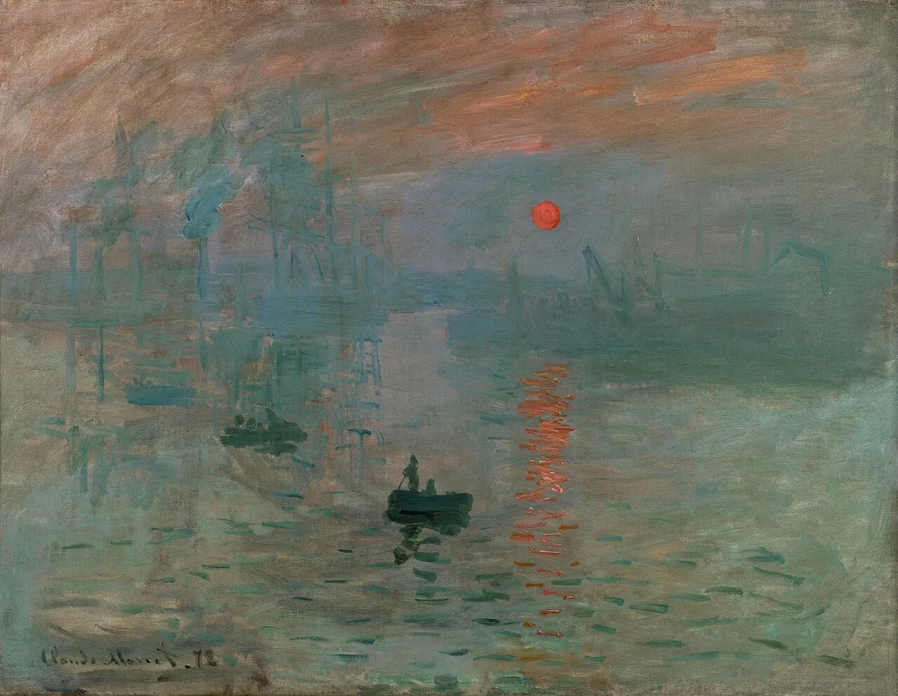

Private previewThe source will be public soon.

# Claude Code, Cursor, Pi, Claude Desktop, Windsurf and VS Code.
sunriser mcp discover
# Wrap your agent with sunriser.
sunriser mcp adopt githubsunriser mcp set github --command 'github-mcp-server stdio'
sunriser wrap github
# inline config
sunriser wrap --deny 'kubectl_delete,node_*' -- npx mcp-server-kubernetes# Claude Code: gh, kubectl, terraform and every other shell command go through guard.
sunriser hook install
# The same for pi.
sunriser hook install --agent pisunriser preset list
# apply the ruleset
sunriser preset set github careful# block tools by name
sunriser rule add github merge_pull_request --why 'should be invoked by human'
# or only when its arguments match
sunriser rule add github 'push_files branch=main' --why 'main takes a PR'
# ask what the rules would do with one call
sunriser rule test github push_files '{"branch":"main"}'# block shell commands by pattern
sunriser rule add bash 'gh pr merge*' --why 'should be invoked by human'
sunriser rule list# only these tools get through, new ones stay blocked
sunriser mcp set github --allow 'get_*,list_*,search_*'Make the rules external managed, not in .md files.
sunriser mcp serveLets agents read the rules and the audit log.
sunriser skill installTells agents what action they cannot do, so they know in advance.
Action Guardrails for your MCP servers and CLI tools. Blocks unneeded agent actions and audits every call.
SoonLeast-privilege identity for each agent. Short-lived access that limits the blast radius.
SoonSelf-hosted collector for your agent telemetry. Tells you what to upgrade and why.
See what your agent tried, what ran, and where policy stepped in before it reached your systems.
shop/deploy-botGuard wraps your MCP servers and hooks your agent's shell.
Guard audits every tool call your agents make, and every rule change, even one made by hand.
Guard verifies your log chain has not been tampered with. Seal it with your SSH key so a rewrite shows.
Controllable and auditable.
clientThe name the agent reports for itself.
decisionAllowed or blocked by your rules.
agentThe agent process that started the call.
prevThe hash of the previous line. It chains the log.
headPrinted by verify. Keep it away from your agent and check it next time with verify --head.
warrant-viewRead-only access to one namespace. Every agent starts here.
warrant-deployRoll out new versions in one namespace.
warrant-operateDay-two operations: scaling and restarts.
wrap --as shop/deploy-botGuard runs your MCP server under a warrant. Every call is audited with its identity.
Collects audit logs from all your machines into one record. Self-hosted, so your logs stay in your network.
Checks your systems for exploited CVEs, end-of-life versions, breaking upgrades, and risky MCP tools. Advisories are YAML files in a public repo, open to anyone.
Sunriser is not a marketplace or a hosted service. It does not score risk or collect your telemetry.